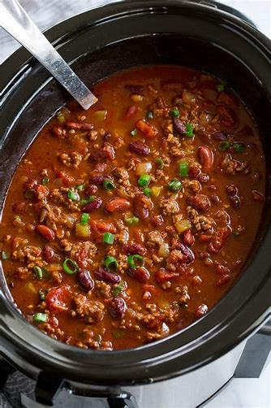

Chili

Description
My favorite comfort food. So simple yet filling. Add your favorite beans and meat with some tomato sauce into the crockpot.
My favorite bean to use is navy, follow by kidney. Meat wise, we switch between ground chuck and pulled rotisserie chicken.
Ingredients
- 1 can of Navy Beans
- 1 cup of pulled rotisserie chicken
- 12oz tomato sauce
Steps
- Pour can of beans into slow cooker
- Next add the chicken
- Add the tomato sauce; stir
- Add seasoning if needed; stir
- Cook on high for 2-4 hours or low for 6-8
- Enjoy